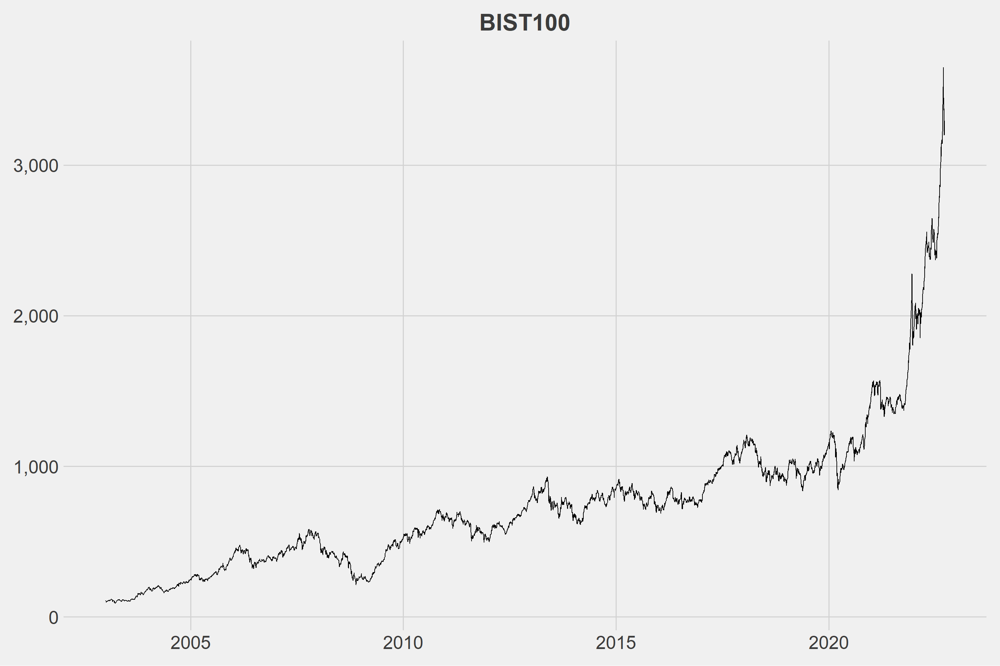
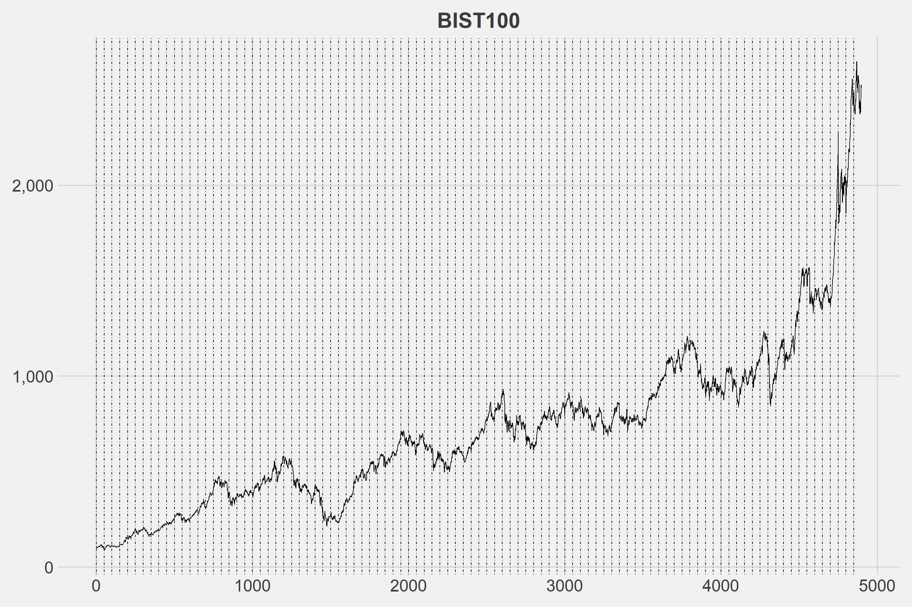
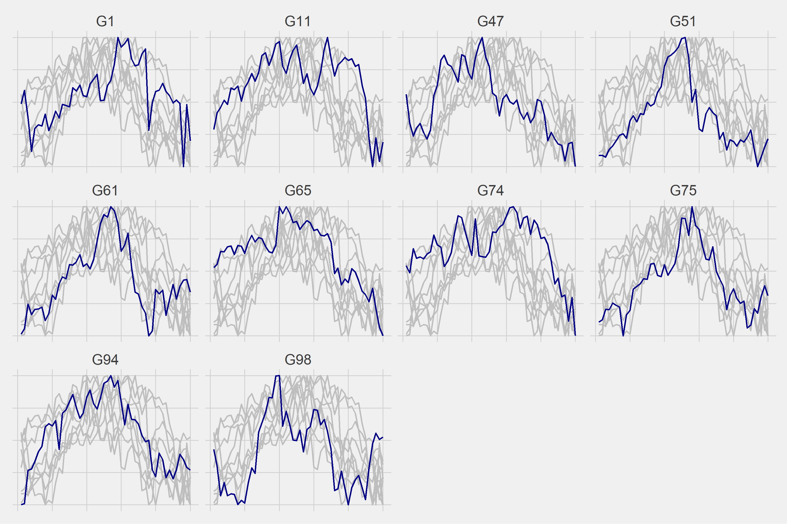
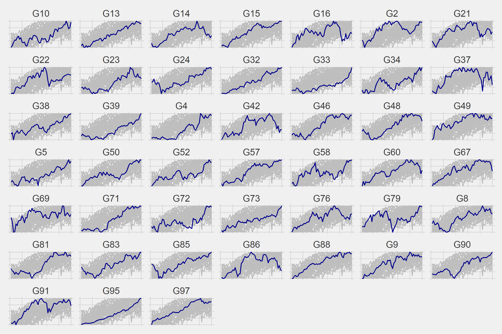
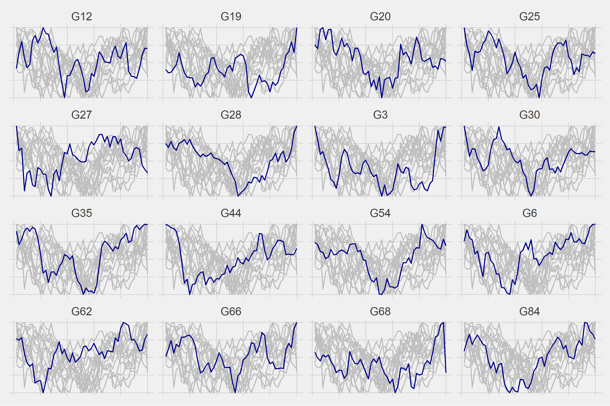
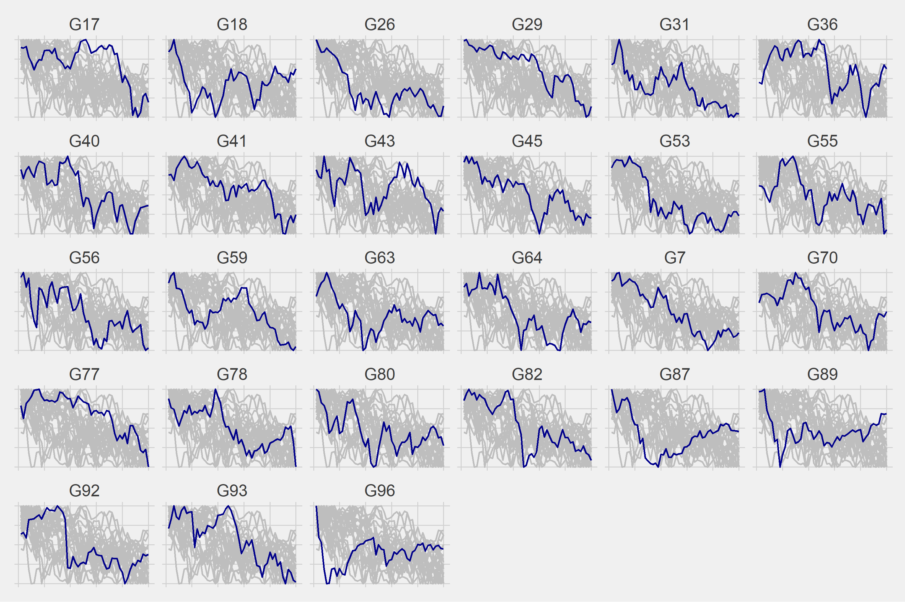
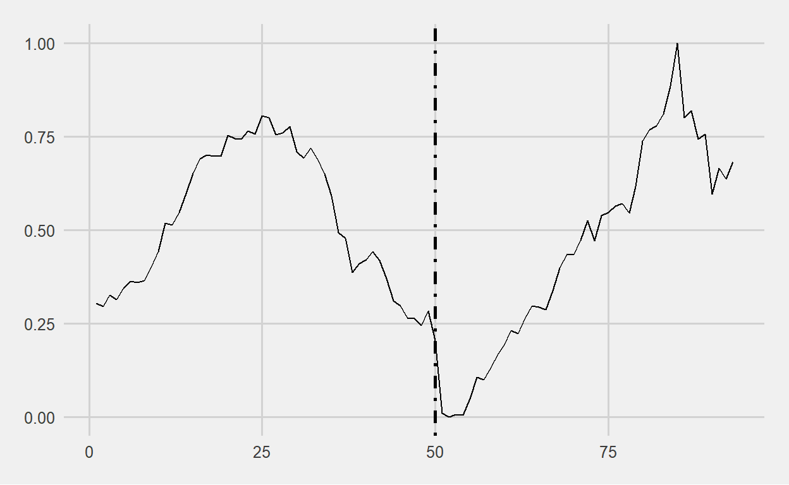

Everyone has an opinion on whether history repeats itself, with some claiming that it does and others claiming that it does not. I agree with those who believe history repeats itself. This study’s claim will be revealed at the end of this post.
I’d like to inform you about how the study will progress step by step.
First things first, it’ll be decided what the financial series will be. I chose to use data from the Borsa Istanbul 100 index for this study. We’ll divide the series into the number of slices we determined in the second step once we know what the data will be. After dividing the series, we’ll use the hierarchical clustering method based on Dynamic Time Warping to find similar series. More information about DTW can be found in my previous post. Following the discovery of similar series, the movements of these series in a given time interval will be examined. We expect that the series will behave similarly in the given time interval. Because, well, why not?
The data were obtained from CBRT’s website, which you can access by downloading the post33.xlsx file from here.
The dataset contains 4943 rows.
| t | date | close |
|---|---|---|
| 4934 | 2022-09-09 | 3521.38 |
| 4935 | 2022-09-12 | 3649.21 |
| 4936 | 2022-09-13 | 3426.88 |
| 4937 | 2022-09-14 | 3446.96 |
| 4938 | 2022-09-15 | 3363.12 |
| 4939 | 2022-09-16 | 3377.33 |
| 4940 | 2022-09-19 | 3199.54 |
| 4941 | 2022-09-20 | 3277.50 |
| 4942 | 2022-09-21 | 3245.76 |
| 4943 | 2022-09-22 | 3295.27 |

The first 4900 days of the current series will be used.
| t | date | close |
|---|---|---|
| 4891 | 2022-07-06 | 2408.15 |
| 4892 | 2022-07-07 | 2425.56 |
| 4893 | 2022-07-08 | 2434.02 |
| 4894 | 2022-07-13 | 2408.08 |
| 4895 | 2022-07-14 | 2382.44 |
| 4896 | 2022-07-18 | 2451.27 |
| 4897 | 2022-07-19 | 2501.96 |
| 4898 | 2022-07-20 | 2525.20 |
| 4899 | 2022-07-21 | 2511.37 |
| 4900 | 2022-07-22 | 2516.56 |
The number of sub-series into which we’ll divide the series is critical. If we choose a very long time interval, there may be issues with similarity; if we choose a very short time interval, it may be time consuming and we may not get the desired movements. The optimal number can be determined later, but for now, I’d like to set it to 50. When the number is set to 50, there will be 98 sub-series.

| t | date | close | group |
|---|---|---|---|
| 1 | 2003-01-02 | 105.9858 | G1 |
| 2 | 2003-01-03 | 108.3753 | G1 |
| 3 | 2003-01-06 | 103.5734 | G1 |
| 4 | 2003-01-07 | 97.5286 | G1 |
| 5 | 2003-01-08 | 101.6121 | G1 |
| 4895 | 2022-07-14 | 2382.4400 | G98 |
| 4896 | 2022-07-18 | 2451.2700 | G98 |
| 4897 | 2022-07-19 | 2501.9600 | G98 |
| 4898 | 2022-07-20 | 2525.2000 | G98 |
| 4899 | 2022-07-21 | 2511.3700 | G98 |
| 4900 | 2022-07-22 | 2516.5600 | G98 |
It’d be better if we normalize the data.
The first 10 normalized groups are displayed below.
| t | G1 | G2 | G3 | G4 | G5 | G6 | G7 | G8 | G9 | G10 |
|---|---|---|---|---|---|---|---|---|---|---|
| 1 | 0.4866416 | 0.2871891 | 1.0000000 | 0.0601604 | 0.1547002 | 0.7574900 | 0.8913942 | 0.3243712 | 0.0000000 | 0.0000000 |
| 2 | 0.5908696 | 0.1963512 | 0.8103680 | 0.0833915 | 0.2008063 | 0.9194708 | 0.9165304 | 0.4303481 | 0.0014956 | 0.0663438 |
| 3 | 0.3814147 | 0.0000000 | 0.5970524 | 0.0966980 | 0.1433398 | 0.8052858 | 0.9897514 | 0.2890309 | 0.1536198 | 0.1860019 |
| 4 | 0.1177456 | 0.1127994 | 0.6337714 | 0.0679026 | 0.0515875 | 0.7746797 | 1.0000000 | 0.2929387 | 0.1071586 | 0.2776303 |
| 5 | 0.2958645 | 0.1970771 | 0.5063833 | 0.0875143 | 0.0587623 | 0.5753909 | 0.8275195 | 0.3509452 | 0.0877059 | 0.2685981 |
We can now proceed to hierarchical clustering based on DTW. The sub-series will be divided into 4 classes.

Let’s look at the transition probabilities between clusters.
| . | 1 | 2 | 3 | 4 |
|---|---|---|---|---|
| 1 | 1 | 5 | 3 | 0 |
| 2 | 6 | 20 | 6 | 13 |
| 3 | 0 | 6 | 2 | 8 |
| 4 | 2 | 14 | 5 | 6 |
We’ll use the table above, but right now we need to focus on the last sub-series, G98.
| group | cluster |
|---|---|
| G98 | 1 |
The sub-series G98 is in cluster 1, which indicates that the following probabilities will hold true.
The probability of transitioning from cluster 1 to cluster 1 is 10%
The probability of transitioning from cluster 1 to cluster 2 is 50%
The probability of transitioning from cluster 1 to cluster 3 is 30%
The probability of transitioning from cluster 1 to cluster 4 is 0%
We then normalize the remaining 43 days that we excluded at the beginning of the study. The averages of the groups divided into 4 clusters over normalized values are shown below, where we can see four different patterns.


We can see that the 50% chance of moving from cluster 1 to cluster 2 has occurred. So, what will the next 50-day movement look like?
The probability of transitioning from cluster 2 to cluster 1 is 13%
The probability of transitioning from cluster 2 to cluster 2 is 43%
The probability of transitioning from cluster 2 to cluster 3 is 13%
The probability of transitioning from cluster 2 to cluster 4 is 28%
We can expect that the BIST100 will continue to rise with a 43% probability until mid-December.
The codes used in the study can be found below.
library(tidyverse)
library(dtwclust)
library(markovchain)
df <- readxl::read_excel("data.xlsx") %>%
mutate(date = lubridate::dmy(date),
t = seq(1,nrow(.),1), .before = date)
ggplot(df, aes(x = date, y = close)) +
geom_line() +
ggthemes::theme_fivethirtyeight() +
theme(axis.text = element_text(size = 20),
plot.title = element_text(size = 25, hjust = 0.5)) +
scale_y_continuous(labels = scales::comma) +
labs(title = "BIST100")
bist100 <- df %>%
filter(t %in% 1:4900)
ggplot(bist100, aes(x = t, y = close)) +
geom_line() +
geom_vline(xintercept = seq(1,4900,50), linetype = "dotdash") +
ggthemes::theme_fivethirtyeight() +
theme(axis.text = element_text(size = 20),
plot.title = element_text(size = 25, hjust = 0.5)) +
scale_y_continuous(labels = scales::comma) +
labs(title = "BIST100")
bist100 <- bist100 %>%
mutate(
group = paste0("G",rep(1:98, each = 50))
)
normalized <- function(x,...){
(x - min(x,...)) / (max(x,...) - min(x,...))
}
master <- bist100 %>%
select(close,group) %>%
group_by(group) %>%
mutate(t = row_number()) %>%
ungroup() %>%
pivot_wider(names_from = "group", values_from = "close") %>%
mutate_at(
vars(-t), function(x) normalized(x, na.rm = TRUE)
)
k <- 4L
data_cluster <- tsclust(
t(master[,-1]),
type = "h",
k = k,
distance = "dtw"
)
cluster <- as.data.frame(cutree(data_cluster, k=k)) %>%
rownames_to_column(., var = "group") %>%
rename("cluster"=2)
master2 <- bist100 %>%
arrange(group) %>%
left_join(cluster, by = "group") %>%
group_by(group) %>%
mutate(n = row_number()) %>%
mutate_at(vars(close), function(x) normalized(x, na.rm = TRUE)) %>%
ungroup()
for(i in 1:k){
g <- ggplot(master2 %>% filter(cluster == i), aes(x = n, y = close)) +
geom_line(data = master2 %>% filter(cluster == i) %>% rename(group2 = group), aes(group = group2), color = "gray", size = 1) +
geom_line(color = "dark blue", size = 1) +
ggthemes::theme_fivethirtyeight() +
theme(strip.text = element_text(size = 20),
axis.text = element_blank()) +
facet_wrap(~group, scales = "free")
plot(g)
}
probs <- as.data.frame(createSequenceMatrix(cluster$cluster)) %>%
rowid_to_column(".")
g98 <- cluster %>%
filter(group == "G98") %>%
pull(cluster)
df43 <- df %>%
slice(4901:nrow(.)) %>%
mutate_at(vars(close), function(x) normalized(x, na.rm = TRUE)) %>%
mutate(n = seq(51,93,1), .before = date) %>%
select(-date)
pred <- master2 %>%
select(n,group,cluster,close) %>%
group_by(n,cluster) %>%
summarise(close_mean = mean(close)) %>%
ungroup() %>%
arrange(cluster)
ggplot(pred, aes(x = n, y = close_mean)) +
geom_line(size = 1) +
facet_wrap(~cluster) +
ggthemes::theme_fivethirtyeight()
cluster_g98 <- pred %>%
filter(cluster == g98) %>%
select(n,close_mean) %>%
rename("close"=2) %>%
bind_rows(df43)
ggplot(cluster_g98, aes(x = n, y = close)) +
geom_line() +
geom_vline(xintercept = 50, linetype = "dotdash", size = 1) +
scale_color_manual(values = c("red","blue")) +
ggthemes::theme_fivethirtyeight() +
theme(legend.title = element_blank(),
legend.position = "top")